승강기기사 (2011-03-20 기출문제)
1과목: 승강기 개론
1. 다음 중 도어시스템에서 승객과 도어와의 충돌을 방지하기 위하여 물체가 검출되면 반전하여 열리도록 하는 보호장치가 아닌 것은?
- 세이프티 슈
- 인터록
- 광전장치
- 초음파장치
(정답률: 75%)

2. 균형체인의 설치 목적은?
- 균형추 로프의 장력을 일정하게 하기 위해서
- 카의 자체 균형을 유지하기 위해서
- 카와 균형추 상호간의 위치 변화에 따른 무게를 보상하기 위해서
- 카의 자체 하중과 적재 하중을 보상하기 위해서
(정답률: 77%)
3. 카 자중 1300kg, 정격하중 900kg, 균형로프 100kg, 균형추 1680kg, 카 현수도르래 20kg, 균형추 현수도르래 30kg일 때 점차작동식 비상정지장치의 적용중량은 몇 kg인가?
- 카용 : 2320kg, 균형추용 : 1810kg
- 카용 : 2260kg, 균형추용 : 1745kg
- 카용 : 1810kg, 균형추용 : 2320kg
- 카용 : 1160kg, 균형추용 : 9⑤kg
(정답률: 54%)
4. 속도 60m/min, 8인승, 층수 16층인 비상용엘리베이터가 카 바닥에서 카주 끝까지의 거리가 3m일 때 오버헤드(Over Head)는 몇 m인가?(오류 신고가 접수된 문제입니다. 반드시 정답과 해설을 확인하시기 바랍니다.)
- 4.0
- 4.4
- 4.6
- 4.8
(정답률: 55%)
5. 안전계수가 12인 로프의 허용하중이 500kg이라면 이 로프가 최대로 지탱할 수 있는 하중은 몇 kg인가?
- 3000
- 4000
- 5000
- 6000
(정답률: 85%)
6. 권상능력에 대한 설명으로 틀린 것은?
- 권부각이 크면 클수록 권상능력은 증대한다.
- 카측과 균형추측의 로프에 걸리는 장력비(중량비)가 클수록 권상능력이 증대된다.
- 언더커트홈으로 가공된 것에 비해 V홈으로 가공된 것이 초기의 권상능력이 크다.
- 로프와 도르래 홈의 접촉연압을 높이면 권상능력이 증대된다.
(정답률: 64%)
7. 로프식 엘릴베이터의 카 꼭대기 틈새는 무엇에 의하여 결정되는가?
- 카의 정격속도
- 로프의 길이
- 건물의 높이
- 카의 적재용량
(정답률: 71%)
8. 유압식 엘리베이터에서 오일이 한쪽 방향으로만 흐르도록 제어하는 밸브는?
- 스톱밸브
- 유량제어밸브
- 체크밸브
- 릴리프밸브
(정답률: 79%)
9. 에스컬레이터 구조에 대한 설명으로 옳은 것은?
- 경사도는 40도 이하로 할 것
- 디딤판의 정격속도는 50m/min 이하로 할 것
- 디딤판의 양쪽에 난간을 설치할 것
- 이동식 핸드레일의 경우, 운행 전구간에서 디딤판과 핸드레일의 속도차는 5% 이하일 것
(정답률: 73%)
10. 비상용 엘리베이터에 대한 설명 중 옳지 않은 것은?
- 예비전원은 정전시 60초 이내에 엘리베이터 운행에 필요한 전력용량을 자동적으로 발생시켜야 한다.
- 정전시 예비전원에 의하여 2시간 이상 작동되어야 한다.
- 엘리베이터의 운행속도는 45m/min 이상이어야 한다.
- 카 내에는 중앙관리실 또는 경비실 등과 연락할 수 있는 통화장치를 설치하여야 한다.
(정답률: 81%)
11. 로프식 엘리베이터의 호출버튼, 조작반, 통화장치 등 승강기의 안과 밖에 설치되는 모든 스위치의 높이는 바닥면으로부터 0.8m 이상 1.2m 이하에 설치하여야 하나, 스위치가 많아 설치하기가 곤란한 경우에는 몇 m 이하까지로 할 수 있는가?
- 1.3
- 1.4
- 1.5
- 1.6
(정답률: 71%)
12. 엘리베이터의 제어방식에 따른 적용 속도의 설명으로 가장 옳은 것은?
- 직류의 정지 워드레오나드의 무기어방식은 주로 90m/min 이상에 적용한다.
- 교류 1차 전압 제어방식은 120m/min 까지만 적용이 가능하다.
- 가변전압가변주파수방식은 모든 속도범위에 적용이 가능하다.
- 현재 가장 빠른 엘리베이터의 제어방식은 워드 레오나드 기어 방식이다.
(정답률: 74%)
13. 일반적으로 사용되고 있는 유압 엘리베이터의 정격용량범위는?
- 1000~1500 kg
- 1500~2000kg
- 2000~2500kg
- 2500~3000kg
(정답률: 64%)
14. 카의 정격속도가 45m/min인 화물용 엘리베이터의 조속기에 대한 설명으로 옳은 것은?
- 엘리베이터의 속도가 58m/min를 초과하면 과속스위치가 작동하여야 한다.
- 과속스위치는 하강 방향에만 작동한다.
- 카의 속도가 64m/min를 초과하면 비상정지장치가 작동된다.
- 조속기의 2차 동작은 하강 방향에서만 작동한다.
(정답률: 58%)
15. 카가 2대 또는 3대가 병설되었을 때 사용되는 조작방식으로 1개의 승강장 부름에 대하여 1대의 카가 응답하며, 일반적으로 부름이 없을 때에는 다음의 부름에 대비하여 분산 대기하는 복수 엘리베이터의 조작방식은?
- 단식 자동식
- 승합 전자동식
- 군 승합 전자동식
- 군관리 방식
(정답률: 73%)
16. 직류전동기의 회전력을 계산하는데 이용되는 법칙은?
- 플레밍의 오른손법칙
- 플레밍의 왼손법칙
- 전자유도의 법칙
- 렌쯔의 법칙
(정답률: 73%)
17. 승강로의 구조에 대한 설명 중 옳지 않은 것은?(관련 규정 개정전 문제로 여기서는 기존 정답인 1번을 누르면 정답 처리 됩니다. 자세한 내용은 해설을 참고하세요.)
- 승강로의 벽 또는 출입문은 반드시 난연재료로 만들거나 씌워야한다.
- 급ㆍ배수 등의 배관은 승강로 내에 설치하지 않는다.
- 출입구 바닥 앞부분과 카 바닥 앞부분과의 틈의 너비는 4cm 이하로 하여야 한다.
- 승강로 밖의 사람 또는 물건이 카 또는 균형추에 접촉될 엽려가 없는 구조이어야 한다.
(정답률: 71%)
18. 트랙션 권상기에 대한 설명 중 옳지 않은 것은?
- 헬리컬기어드 권상기는 웜기어에 비해 효율이 높다.
- 주로프에 사용되는 도르래의 피치지름은 로프지름의 40배 이상으로 한다.
- 도르래 재질을 주철로 사용하는 경우, 안전율은 4 이상으로 한다.
- 중ㆍ저속용 엘리베이터의 권상기는 주로 웜기어를 사용한다.
(정답률: 72%)
19. 다음 중 에스컬레이터에 설치하여야 할 안전장치에 속하지 않는 것은?
- 인레트 스위치
- 구동체인 안전장치
- 스커트 가드 안전스위치
- 스프로킷 파단 안전장치
(정답률: 60%)
20. 비상용 엘리베이터의 운행속도 기준은?
- 120m/min이상
- 60m/min이상
- 45m/min이상
- 30m/min이상
(정답률: 77%)
2과목: 승강기 설계
21. 승강기가 다음 조건으로 운행될 때 로프의 늘어난 길이는 약 몇 [mm]인가?
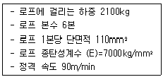
- 45.45
- 50.65
- 55.25
- 60.35
(정답률: 47%)
22. 기어비 76:2, 도르래 지름 600mm인 권상기에 주파수 60Hz, 6극(pole)의 전동기를 사용할 경우 엘리베이터의 정격속도는?
- 45m/min
- 60m/min
- 90m/min
- 1⑤m/min
(정답률: 48%)
23. 비상용 엘리베이터의 소방용수 유입에 대한 엘리베이터층의 대책으로 틀린 것은?
- 최상층의 바닥면보다 상부에 부착된 기기에 관해서는 대책이 필요 없다.
- 카가 최하층에 착상할 때 침수할 우려가 있는 기기는 커버(cover)로 씌우는 등의 방적대책을 행한다.
- 승강장 버튼은 비상운전시 무효로 되게 한다.
- 기계실을 피트내 기기에 준하여 대책을 세운다.
(정답률: 52%)
24. 정격속도 45m/mini, 카높이 3100m, 플란저 여유 스트로크 200mm인 직접식 유압엘리베이터의 오버헤드[mm]는?
- 3900
- 3200
- 3800
- 3700
(정답률: 34%)
25. 로프식 엘리베이터의 로핑방식이 아닌 것은?
- 1:1
- 2:1
- 3:1
- 5:1
(정답률: 71%)
26. 그림에서 중간 스톱퍼에 해당되는 것은?
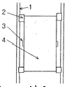
- 1
- 2
- 3
- 4
(정답률: 68%)
27. 엘리베이터 권상기의 감속기구로서 웜 및 웜기어를 채용하려고 한다. 웜의 회전수가 1800rpm이고, 웜기어와 맞물리는 이의 수가 5일 때, 웜기어를 360rpm으로 회전시키려면 웜기어의 잇수를 얼마로 하여야 하는가?
- 10
- 25
- 50
- 100
(정답률: 57%)
28. 비상용엘리베이터를 설계할 때 고려할 사항으로 틀린 것은?
- 기계실내 및 승강로내의 배선은 일반배선으로 한다.
- 전선관 및 상자 등은 물이 고이지 않는 구조이어야 한다.
- 피트내에 설치되는 스위치 등은 비상용으로 쓰여질 때는 분리될 수 있어야 한다.
- 1차 소방스위치의 작동만으로 카와 승강장문을 열려진 채로 운행시킬 수 있어야 한다.
(정답률: 60%)
29. 승강기 카와 균형추 하부에는 반드시 완충기를 설치하도록 하고 있다. 스프링 완충기는 정격속도가 몇[m/min] 이하인 경우에 설치되어야 되는가?
- 60
- 70
- 90
- 1⑤
(정답률: 67%)
30. 복수의 엘리베이터를 능률이 좋게 운전하는 조작방식이 아닌 것은?
- 군승합자동식은 엘리베이터 2~3대가 병설되었을 때 주로 사용되는 방식이다.
- 승합전자동식은 진행방향의 키버튼과 승강장버튼에 응답하면서 승강한다.
- 군승합자동식은 부름이 없을 때는 다음 부름에 대비하여 분산대기 한다.
- 군관리방식은 3~8대를 병설할 때 각 카를 무리없이 합리적으로 운행, 관리할 수 있다.
(정답률: 55%)
31. 의료시설로서 6층 이상의 거실면적의 합계가 3000m2이하인 건물의 승객용 엘리베이터 설치기준으로 맞는 것은?
- 4대
- 3대
- 2대
- 1대
(정답률: 67%)
32. 엘리베이터의 도어에 대한 설명으로 옳은 것은?
- 공동주택용 엘리베이터에서는 카가 주행 중에 저속의 도어를 손으로 억지로 여는데 필요한 힘은 5kgf이상 30kgf이하이다.
- 공동주택용 엘리베이터에서는 카가 정지하고, 동력이 차단되었을 때 카가 저속시 도어를 손으로 억지로 여는데 필요한 힘은 20kgf이상이다.
- 도어가 닫힐 때 도어에 끼어서 받는 아픔을 적게 하기 위한 도어의 개페력은 5kgf이하이다.
- 도어 가이드슈가 끼워져 있는 문턱 홈에 구멍을 뚫어 먼지가 쌓이지 않게 한다.
(정답률: 47%)
33. 승강기의 안전장치 중에서 속도와 직접적인 관계가 없는 것은?
- 세이프티 슈
- 비상정지장치
- 상승과속방지장치
- 조속기
(정답률: 65%)
34. 전기설비 설계 중 조명 전원설비에 대한 설명으로 틀린 것은?
- 보수용 램프, 공구류의 전원 등으로 사용된다.
- 조명전원은 반드시 동력전원으로부터 인출한다.
- 카내의 환기팬은 조명용 전원을 이용할 수 있다.
- 교류 단상 220V가 일반적으로 사용된다.
(정답률: 64%)
35. 창고등 주로 화물용 엘리베이터에 적용되는 조작방식은?
- 승합 전자동식
- 단식 자동식
- 군승합 자동식
- 하강승합 전자동식
(정답률: 61%)
36. 승강기에 대하여 설명한 것 중 타당하지 않은 것은?
- 승강로를 통하여 사람이나 화물을 운반하는 시설 및 장치이다.
- 수직으로 승강하는 시설 및 장치이다.
- 엘리베이터, 에스컬레이터, 휠체어리프트 등을 말한다.
- 용도에 의한 분류로 승객용과 화물용이 있다.
(정답률: 67%)
37. 와이어로프의 종류가 아닌 것은?
- 실형
- 필러형
- 워링톤형
- 강선형
(정답률: 58%)
38. 권상기 및 카의 전 하중을 직접 받는 부분으로 콘크리트의 경우 승강기 기계대(machine beam)의 안전율은 얼마 이상이어야 하는가?
- 7
- 8
- 10
- 15
(정답률: 59%)
39. 승장 도어의 로크 및 스위치의 설계 조건으로 틀린 것은?
- 승장도어는 카가 없는 층에서는 닫혀 있어야 한다.
- 승장도어의 인터록장치는 도어 스위치를 닫은 후에 로크가 확실히 걸려야 한다.
- 승장도어가 완전히 닫혀 있지 않은 경우에는 엘리베이터가 움직이지 않아야 한다.
- 승장도어의 인터록장치는 도어 스위치가 확실히 열린 후에 로크가 벗겨져야 한다.
(정답률: 51%)
40. 정전시에 작동되는 케이지내의 예비조명장치는 램프 중심에서 수직으로 2m 떨어진 지점에서 측정할 때 조도는 몇 [lx] 이상이어야 하는가?(관련 규정 변경전 문제로 여기서는 1번을 누르면 정답 처리됩니다. 자세한 내용은 해설을 참고하세요.)
- 1
- 2
- 3
- 4
(정답률: 57%)
3과목: 일반기계공학
41. 실린더의 피스톤 로드에 인장 하중이 걸리면 실린더는 끌리는 영향을 받게 되는데, 이러한 영향을 방지하기 위하여 인장 하중이 가해지는 쪽에 밸브를 설치하여 끌리는 효과를 억제하기 위한 밸브는?
- 카운터 밸런스 밸브(counter balance valves)
- 시퀀스 밸브(sequence valves)
- 언로드 밸브(unload valves)
- 리듀싱 밸브(reducing valves)
(정답률: 71%)
42. 그림과 같은 브레이크의 드럼 축에 25Nㆍm의 토크가 작용할 때 블록 브레이크의 레버 끝에 가하는 힘 F는 약 몇 N 가해야 제동이 되는가? (단, 마찰계수는 μ=0.2이며, 그림에서 길이 치수의 단위는 mm이다.)
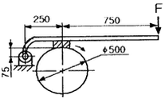
- 58.8.
- 66.3
- 117.5
- 132.5
(정답률: 42%)
43. 다음 중 미세한 숫돌가루를 이용하여 표면을 매끈하게 만드는 가공법은?
- 선반
- 래핑
- 호빙
- 밀링
(정답률: 60%)
44. 일반적으로 선반으로 가공할 수 없는 것은?
- 기어 이 절삭
- 나시 절삭
- 축 외경 절삭
- 축 테이퍼 절삭
(정답률: 60%)
45. 한 쌍의 기어가 물릴 때 서로 접하는 부분의 궤적을 무엇이라 하는가?
- 피치원
- 모듈
- 원주 피치
- 지름 피치
(정답률: 62%)
46. 그림과 같은 50kN이 작용하는 나사 프레스(screw press)에서 사각 나사의 바깥지름이 12mm, 골지름이 10mm, 피치가 2mm일 때 너트의 높이는 약 몇 mm 인가?(단, 허용접촉면의 면압력은 97N/mm2이다.)
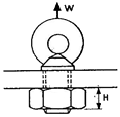
- 30
- 40
- 50
- 60
(정답률: 35%)
47. 길이 3.6m, 지름 50mm의 연강축이 180rpm으로 전동할 때 축 끝이 1°비틀림이 생겼다. 이 때 약 몇 kW의 동력을 전달하는가? (단, 축 재료의 전단 탄성계수는 8.0X104N/mm2이다.)
- 약 2.1kW
- 약 4.5kW
- 약 7.8kW
- 약 8.7kW
(정답률: 38%)
48. 아크 용접기 수하특성의 설명으로 옳은 것은?
- 전류가 증가하면 열이 커지는 특성
- 전류가 강하면 전력이 증가하는 특성
- 부하 전류가 증가하면 단자 전압이 증가하는 특성
- 부하 전류가 증가하면 단자 전압이 저하하는 특성
(정답률: 57%)
49. 동일 조건에서 베어링 하중을
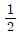
로 하면 베어링 수명(Ln)은 몇배로 되는가?- 2Ln
- 4Ln
- 6Ln
- 8Ln
(정답률: 55%)
50. 그림과 같이 주어진 단순보에서 최대 처짐에 대한 서술 중 틀린 것은?
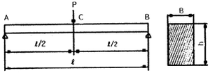
- 탄성계수(E)에 반비례한다.
- 하중(P)에 비례한다.
- 길이(ℓ)의 3제곱에 비례한다.
- 보의 단면 높이(h)의 제곱에 비례한다.
(정답률: 58%)
51. 공작물 지름이 38mm, 회전수가 1100rpm일 때 절삭속도는 약 몇 m/min인가? (단, 바이트 1회전 당 이송량은 0.1mm/rev이다.)
- 8.36 m/min
- 23.8 m/min
- 80.3 m/min
- 131 m/min
(정답률: 45%)
52. 다음 ＜보기＞에서 설명하는 주철은 무엇인가?
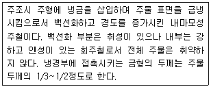
- 가단 주철
- 칠드 주철
- 구상흑연 주철
- 미하나이트 주철
(정답률: 64%)
53. 용접부나 주물검사방법에 적용하는 비파괴 검사법이 아닌 것은?
- 방사선 검사
- 조직 검사
- 초음파 검사
- 자분 검사
(정답률: 63%)
54. 관속을 흐르는 액체의 유속을 갑자기 변화시켰을 때 액체에 심한 압력변화를 일으키는 현상은?
- 공동현상
- 맥동현상
- 수격현상
- 충격현상
(정답률: 60%)
55. 다음 중 감마(γ)철에 탄소가 최대 2.11%고용된 γ고용체로 면심입방격자의 결정구조를 가지고 있는 것은?
- 펄라이트
- 오스테나이트
- 마텐자이트
- 시멘타이트
(정답률: 62%)
56. 압력 제어 밸브가 아닌 것은?
- 릴리프밸브
- 압력조절밸브
- 체크밸브
- 시퀀스밸브
(정답률: 55%)
57. 4m/s의 속도로 진동하고 있는 벨트 전동에서 긴장 측의 장력이 1215N, 이완 측의 장력이 510N이라고 하면 전달 동력은 몇 kW인가?
- 1.52
- 2.82
- 3.02
- 4.82
(정답률: 43%)
58. 판의 두께가 12mm, 지름이 18mm인 겹치기 리벳이음에서 약 1000N의 하중이 작용할 때 리벳에 생기는 전단응력은 약 몇 N/mm2인가?
- 1.9
- 2.5
- 2.9
- 3.9
(정답률: 24%)
59. 다음 재료 중 소성가공(塑性加工)이 가장 어려운 것은?
- 주철
- 저탄소강
- 구리
- 알루미늄
(정답률: 64%)
60. 스프링의 일반적인 용도 설명으로 잘못된 것은?
- 하중 및 힘의 측정에 사용한다.
- 진동 또는 충격에너지를 흡수한다.
- 운동에너지를 열에너지로 소비한다.
- 에너지를 저축하여 놓고 이것을 동력원으로 사용한다.
(정답률: 67%)
4과목: 전기제어공학
61. 다음 중 직류 전동기의 규약효율을 나타내는 식으로 가장 알맞은 것은?
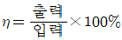
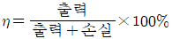
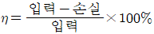
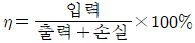
(정답률: 62%)
62.
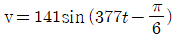
인 파형의 주파수는 약 몇 [Hz]인가?- 50
- 60
- 100
- 377
(정답률: 52%)
63. 2차계 시스템의 응답형태를 결정하는 것은?
- 히스테리시스
- 정밀도
- 분해도
- 제동계수
(정답률: 49%)
64. 불연속제어에 속하는 것은?
- 비율제어
- 비례제어
- 미분제어
- ON-OFF제어
(정답률: 59%)
65. 제어동작에 대한 설명 중 옳지 않은 것은?
- 2위치동작: ON-OFF 동작이라고도 하며, 편차의 정부 (+,-)에 따라 조작부를 전폐 또는 전개하는 것이다.
- 비례동작: 편차의 제곱에 비례한 조작신호를 낸다.
- 적분동작: 편차의 적분치에 비례한 조작신호를 낸다.
- 미분동작: 조작신호가 편차의 증가속도에 비례하는 동작을 한다.
(정답률: 45%)
66. 제동계수 중 최대 초과량이 가장 큰 것은?
- δ=0.5
- δ=1
- δ=2
- δ=3
(정답률: 58%)
67. 그림에서 스위치 S의 개폐에 관계없이 전전류 I가 항상 30A라면 저항 r3와 r4의 값은 몇 [Ω]인가?
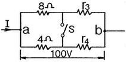
- r3=1, r4=3
- r3=2, r4=1
- r3=3, r4=2
- r3=4, r4=4
(정답률: 56%)
68. 도체에 전하를 주었을 경우에 틀린 것은?
- 전하는 도체 외측의 표면에만 분포한다.
- 전하는 도체 내부에만 존재한다.
- 도체 표면의 곡률 반경이 작은 곳에 전하가 많이 모인다.
- 전기력선은 정(+)전하에서 시작하여 부전하(-)에서 끝난다.
(정답률: 62%)
69. 그림과 같은 피드백 제어시스템에서 단위 계단 함수를 입력으로 할 때 정상상태 오차가 0.01이 되도록 하는 의 값은?
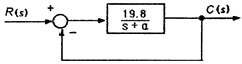
- 0.1
- 0.2
- 0.3
- 0.4
(정답률: 43%)
70. 논리식 A+AB를 간단히 하면?
- 0
- 1
- A
- B
(정답률: 58%)
71. 변압기 절연 내력시험이 아닌 것은?
- 가압 시험
- 유도 시험
- 충격 시험
- 절연저항 시험
(정답률: 42%)
72. 그림과 같은 다이오드 브리지 정류회로가 있다. 교류전원 가 양일 때와 음일 때의 전류의 방향을 바로 적은 것은? (단, 화살표 방향을 양으로 한다.)
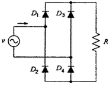
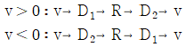
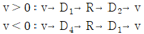
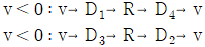
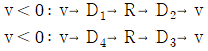
(정답률: 52%)
73. 궤환제어계에 속하지 않는 신호로서 외부에서 제어량이 그 값에 맞도록 제어계에 주어지는 신호를 무엇이라 하는가?
- 동작 신호
- 기준 입력
- 목표값
- 궤환 신호
(정답률: 58%)
74. 그림에서 출력 Y는?
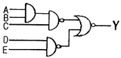
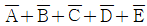
- A+B+C+D+E
- ABCED
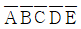
(정답률: 47%)
75. 온도를 임피던스로 변환시키는 요소는?
- 측온 저항
- 광전지
- 광전 다이오드
- 전자석
(정답률: 56%)
76. 그림과 같은 브리지 정류회로는 어느 점에 교류입력을 연결하여야 하는가?
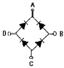
- A-B점
- A-C점
- B-C점
- B-D점
(정답률: 60%)
77. 시퀀스제어의 장점이 아닌 것은?
- 구성하기 쉽다.
- 시스템의 구성비가 낮다.
- 원하는 출력을 얻기 위해 보정이 필요 없다.
- 유지 및 보수가 간단하다.
(정답률: 51%)
78. 순시전압
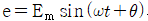
의 파형은?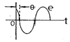
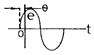
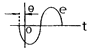
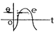
(정답률: 57%)
79. 다음 중 옴의 법칙에 대한 설명으로 옳지 않은 것은?
- 저항에 전류가 흐를 때 전압, 전류, 저항의 관계를 설명해 준다.
- 옴의 법칙은 저항으로 전류의 크기를 조절 할 수 있음을 보여준다.
- 옴의 법칙은 저항에 의한 전압강하를 설명해 준다.
- 옴의 법칙을 이용하여 임피던스에 의한 전압강하는 설명할 수 없다.
(정답률: 65%)
80. 그림과 같은 블록선도를 등가 변환한 것은?
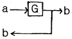
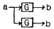
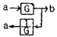
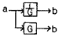
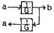
(정답률: 48%)